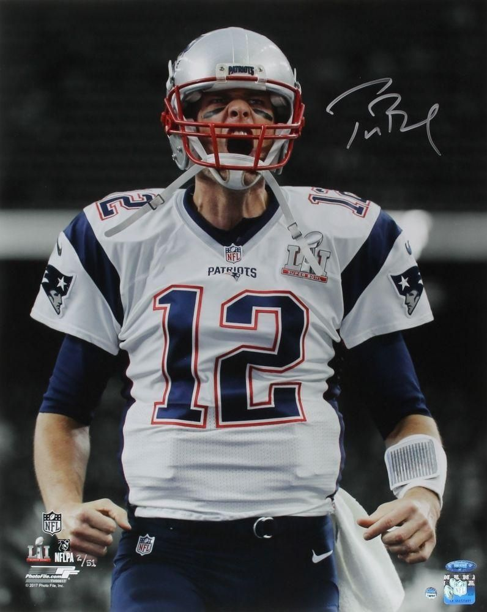

Son nouveau défi :
En effet cette saison le quarterback le plus célèbre des États Unis a tenté de relever un nouveau challenge. C'est bien à 43 ans que le doyen de cette league a décidé de tout quitter (son équipe avec laquelle il a passé les 19 premières années de sa carrière) pour rejoindre une franchise qui n'était même pas qualifié pour les playoff l'année dernière. La fin de l'histoire est que ce challenge est une réussite la preuve en est que les Buccaneers vont disputer le Super Bowl LV ce dimanche 7 février 2021 dans lequel nous leur souhaitons bonne chance !
Tom Brady en image :
Si vous souhaitez en savoir plus sur cette homme voici des réseaux sociaux pour le retrouver :


Site réalisé par Alexandre GODIN étudiant en MSc Ingénieurie d'Affaires, Kedge Business School